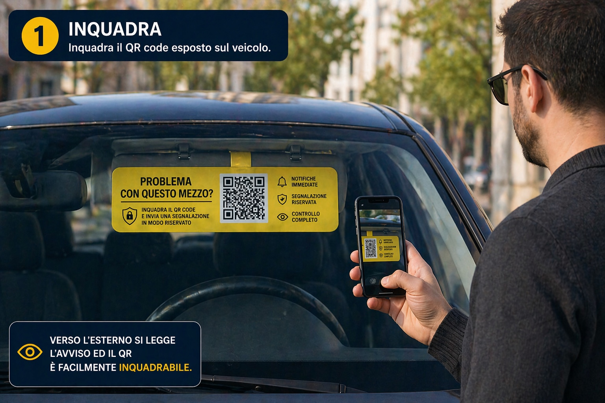
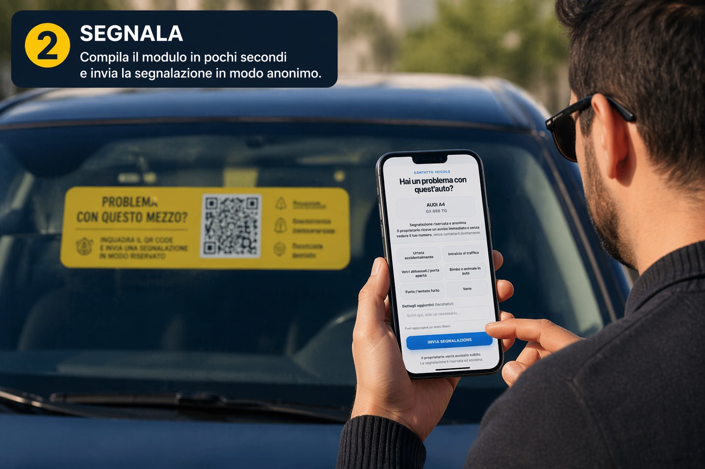
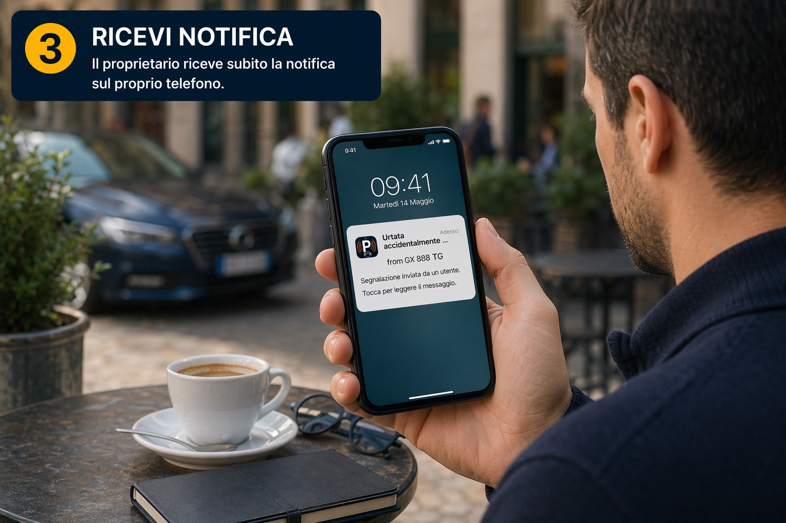
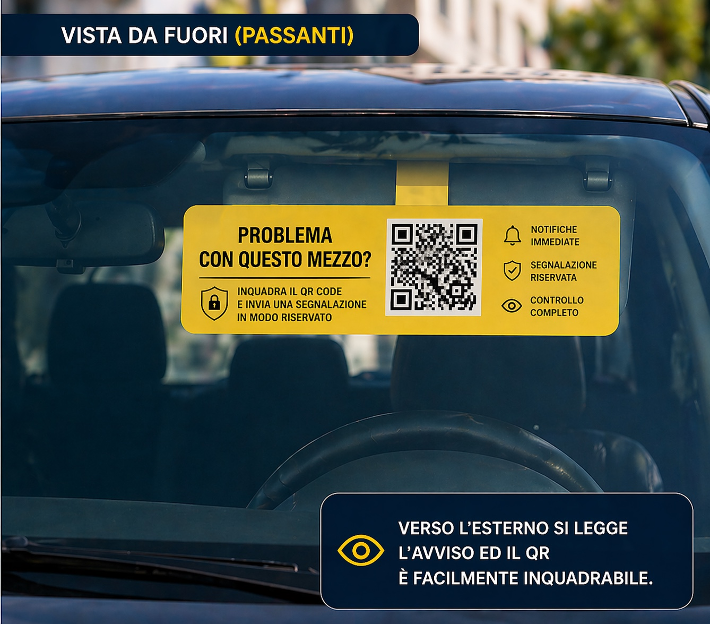
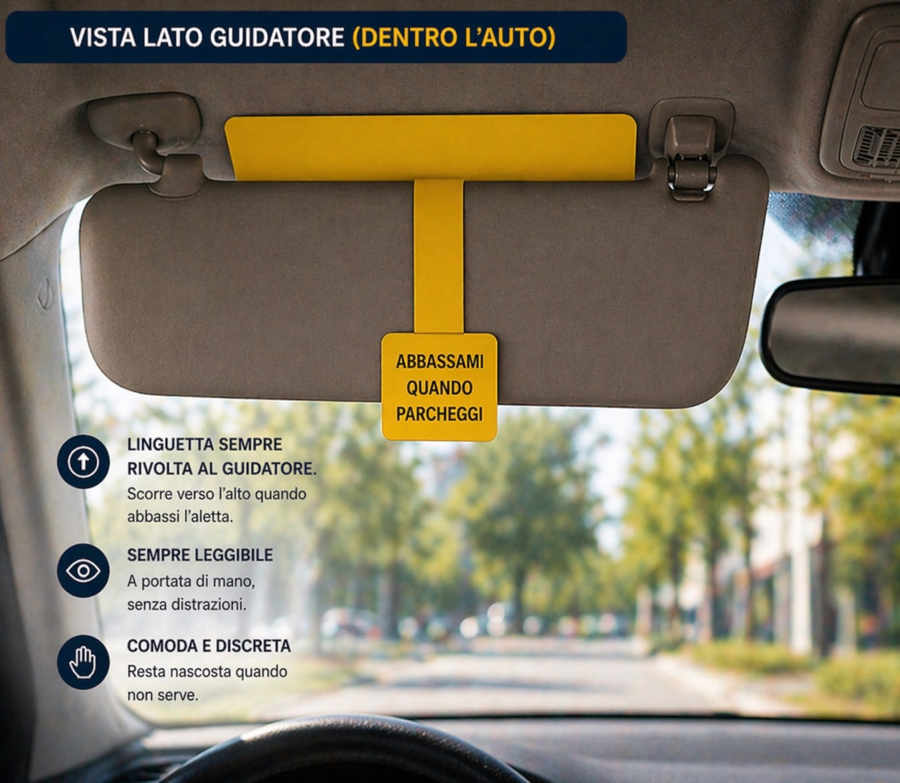
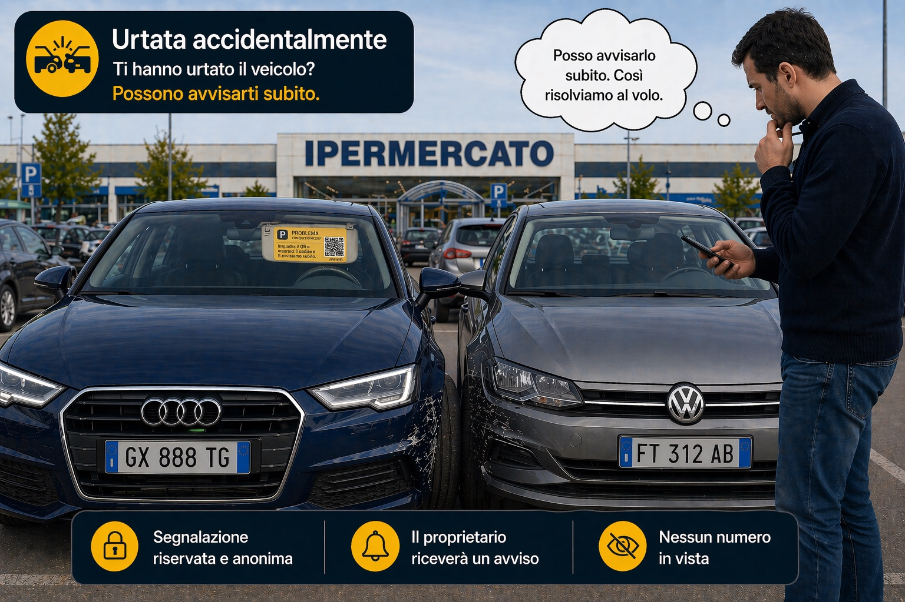
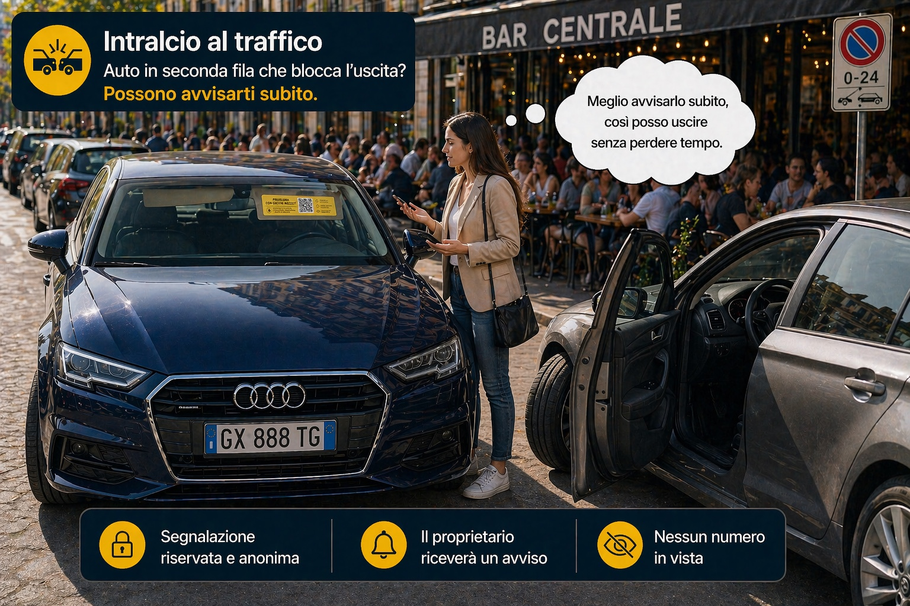
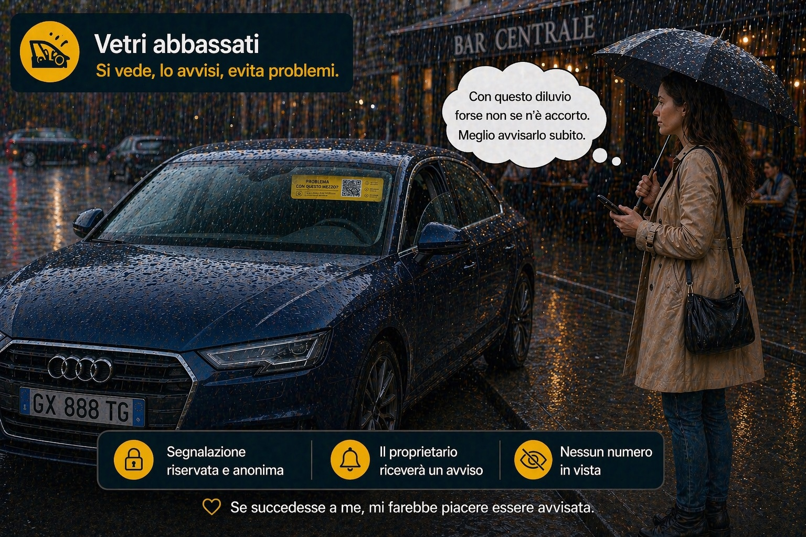
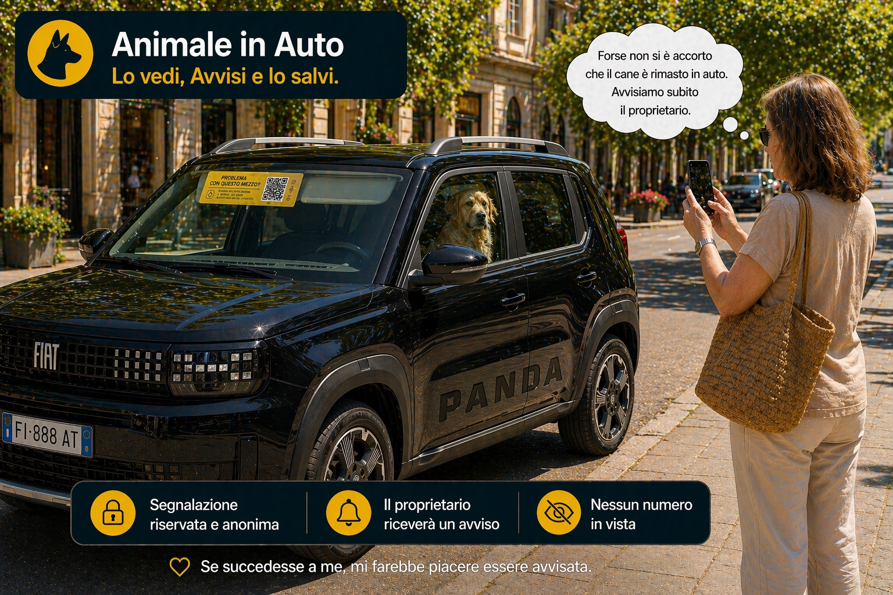
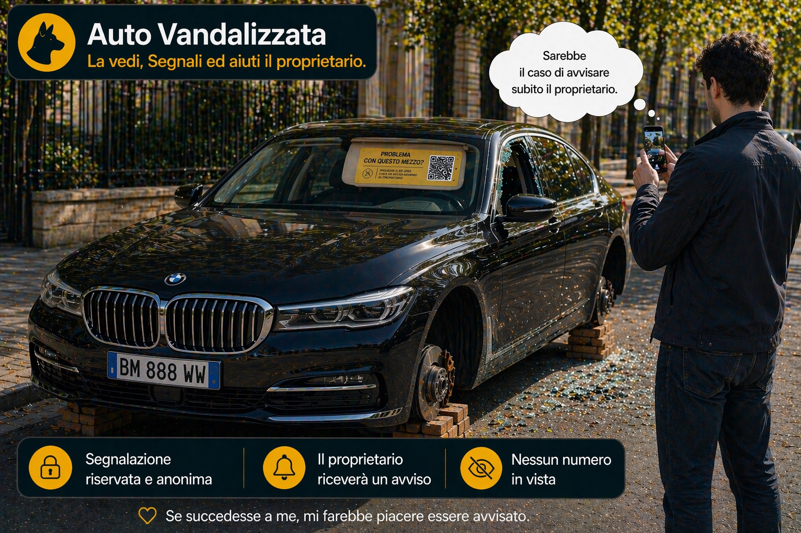

Come funziona in tre passaggi
Chi nota un problema reale deve solo inquadrare, segnalare e lasciare che la notifica arrivi subito al proprietario.

Il QR è esposto sul veicolo ed è subito leggibile dall’esterno.

La compilazione richiede pochi secondi e resta anonima.

Il proprietario riceve subito l’avviso sul proprio telefono.
Il supporto è visibile fuori e comodo dentro
Il cartello è progettato per essere chiaro verso i passanti e pratico per il guidatore, integrandosi con l’aletta parasole.

L’avviso e il QR risultano subito inquadrabili dall’esterno.

La linguetta resta sempre rivolta al guidatore e il sistema rimane discreto quando non serve.
Quando può servirti davvero
Non sono esempi teorici. Sono situazioni quotidiane in cui spesso si perde tempo, ci si imbarazza o non si sa come avvisare il proprietario.

Chi ha urtato può avvisarti subito e risolvere senza scappare o lasciare tutto nel dubbio.

Se un’auto in seconda fila blocca l’uscita, il proprietario può essere avvisato subito senza cercarlo nei locali.

Un passante può aiutarti immediatamente prima che pioggia o altri fattori creino un danno più serio.

Quando c’è un rischio reale, un avviso rapido può fare davvero la differenza.

Se un passante nota un danno evidente, un furto o ruote rubate, può segnalare subito e aiutare il proprietario.
Perché è più intelligente di un numero sul parabrezza
Perché chi segnala non deve telefonare, non si espone e non vede il tuo numero. Il proprietario riceve comunque l’avviso in modo immediato e riservato.
Prova gratuita già funzionante
Ti consegniamo l’App per il tuo mezzo, la salvi sul telefono, attivi le notifiche e da lì puoi stampare le comunicazioni da esporre tutte le volte che vuoi.